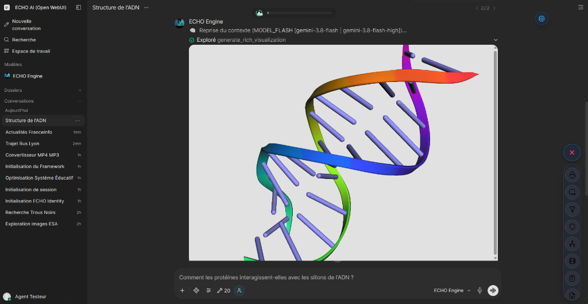

12. Édition & Visuel
Les mots ne suffisent pas toujours pour expliquer un concept ou retravailler un document de grande envergure. ECHO est capable d'enrichir l'interface visuelle de votre écran pour y afficher des diagrammes ou de véritables éditeurs interactifs.
1. Intelligence Visuelle (Schémas et Graphiques)

Si vous travaillez sur une architecture complexe, un arbre généalogique ou des statistiques, demander à l'IA de l'expliquer sous forme de texte brut est souvent limitant. ECHO peut à la place générer des cartes mentales ou des diagrammes interactifs.
Ces schémas apparaissent directement au centre de votre écran. Vous pouvez zoomer, faire glisser l'interface ou interagir avec les éléments générés par l'IA pour mieux appréhender la structure des données.
2. L'Éditeur ECHO Codex (Texte et Code)

Le Codex est l'éditeur avancé d'ECHO, pensé pour la manipulation de fichiers volumineux (code source, longs articles, scripts).
Lorsqu'il est activé, il se déploie à l'écran comme un véritable logiciel de traitement de texte ou d'édition de code. Il vous offre de multiples avantages :
- Travail à quatre mains : L'IA peut modifier une partie spécifique du texte, et vous pouvez aussitôt cliquer dedans pour corriger une phrase à la main, tout cela dans la même fenêtre.
- Ouverture directe depuis vos messages (
✏️/👁️) : Dès qu'ECHO crée ou modifie un fichier, son nom devient cliquable dans la conversation. Un clic dessus ouvre immédiatement l'éditeur sur le bon fichier ou la bonne révision, sans avoir à chercher dans une arborescence. - Aperçu visuel automatique & Inspection binaire : Les documents mis en forme (Markdown, pages HTML, feuilles de style CSS, graphiques SVG, PDF et images) s'affichent directement en mode aperçu dès l'ouverture (bascule instantanée vers le code source via le bouton
👁️), tandis que les fichiers binaires bénéficient d'un éditeur hexadécimal dédié. - Consultation inter-conversations protégée : Un sélecteur vous permet de parcourir les fichiers créés dans vos autres discussions. Pour vous éviter toute modification accidentelle hors contexte, ces fichiers externes s'ouvrent automatiquement avec un badge
🔒 Lecture Seule. - Machine à remonter le temps : Le Codex sauvegarde automatiquement l'historique complet de vos versions. Si une modification proposée par l'IA ne vous convient pas, vous pouvez naviguer dans le passé et restaurer la version précédente en un clic.
- Actions rapides : Vous disposez de 8 commandes directes (Raccourcir, Allonger, Commenter, Décommenter, Refactoriser, Corriger, Générer des tests, Optimiser) qui ordonnent à l'IA d'agir sur le bloc de texte ou de code sélectionné, sans avoir à rédiger de consigne dans le chat.
⚙️ Dossier d'Ingénierie & Spécifications
1. Visual Intelligence (universal_visual_generator.py v5.229.0.0 & echo_visuals.py v5.226.18.0)
Le générateur s'appuie sur le pattern Data Island. Il produit la spécification interactive (Mermaid, ECharts, Markmap, D3.js, vis-network, Leaflet) et l'injecte dans le DOM via window.echoRenderVisual avec support natif du zoom, pan et drag.
2. Architecture ECHO Codex Multi-Workspaces & Cross-Chat
L'éditeur Codex repose sur quatre composants synchronisés :
- Le Moteur Git (
echo_codex_git.pyv5.231.2.1) : Surcouche Python pure autour dedulwichgérant deux espaces de travail distincts (ECHO_CODEX_WORKSPACES:mainversionné sous Git etsandboxdédié à l'exécution). Il intègre un contrôle d'état en O(1) (get_latest_state), filtre les répertoires massifs viaECHO_SYNC_EXCLUDE_LIST(node_modules,.venv, etc.), supporte la lecture de fichiers binaires encodés en Base64 (read_file_binaryjusqu'à 10 Mo) et retourne(commit_hash, paths_to_rm)lors d'undelete_filepour purger récursivement SQLite. - L'Interface HUD & Action (
echo_codex_ui.pyv5.231.6.1 &echo_codex_action.pyv5.231.6.1) : Injection de Monaco Editor (propulsé par le Window Manager UCTP/SSE/RPC), avec aperçu multi-format (Markdown viamarked.jschargé en isolation CommonJS UMD, HTML Sandboxed Iframe, CSS Palette & Typography Inspector, SVG Zoom/Pan, Images et PDF WYSIWYG) activé par défaut (DEFAULT_PREVIEW_EXTS), Éditeur Hexadécimal Binaire, sélecteur de conversation Cross-Chat (actionsswitch_chatetlist_chats) verrouillant l'interface en lecture seule (isReadOnlyChat) lorsquecurrentChatId !== activeChatId, et verrou logiciel anti-Race Condition à la sauvegarde. - L'Outil LLM (
echo_codex_tool.pyv5.231.20.1) : Protégé par le verrou partagéget_codex_lock(uid, cid)et déporté hors de l'Event Loop viaasyncio.to_thread, il expose 11 primitives d'édition, d'exploration inter-conversations et de voyage temporel (create_codex,read_codex,edit_codexdoté d'un contrôle de concurrence optimiste SHA-256original_shaen Mode 2assisted_editionprévenant tout écrasement concurrent Lost Update,delete_codex,list_codex,list_other_chats_ids,search_codexincluant le modetrace_history,history_codex,restore_codex,summarize_codexexécuté surMODEL_APOLLOavecthinking="medium"etmaxOutputTokens: 8192, etopen_codex_uisupportanttarget_chat_idetcommit_hash). Chaque opération retourne une directive URN (_emit_urn_directive) guidant le modèle vers la syntaxe[nom_du_fichier](codex:scope:workspace/chemin). - Le Filtre de Liens Interactifs (
codex_links_filter.pyv5.231.11.1) : Vérifie l'existence physique viacheck_codex_file_exists(echo_paths.pyv5.231.20.1), transforme en Outlet les URNs en ancres#codex:...interceptées parwindow.echoOpenCodex(et neutralise les liens vers des fichiers inexistants), puis les restaure bijectivement en Inlet pour préserver le hash d'invariant de Suture.